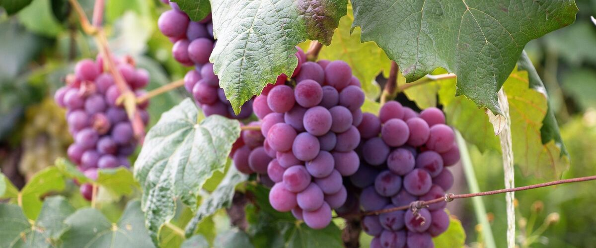

When to plant grapes in Centralia and Chehalis, WA
Plant grape vines in Centralia and Chehalis Mar 11 – May 6.
- Difficulty
- Moderate
- Sun
- Full sun; a warm south-facing spot
- Spacing
- 6 to 8 feet apart along a trellis
- Planting depth
- Same depth as in the pot
- Frost
- Hardy perennial; comes back every year
- First harvest
- First bunches in year three
Why these dates
Centralia and Chehalis's typical last spring frost is April 22. As a hardy perennial, this crop can go in about 6 weeks before that.
West-side valleys. The Willamette Valley, Puget Sound and southern Oregon valleys. Long frost-free seasons, but soil stays cold and wet into May, so warm crops wait for warm soil, not just the last frost.
How to grow grapes in Centralia and Chehalis
- Pick a sunny spot with soil that drains well, and mix in an inch or two of compost.
- Plant grape vines Mar 11 – May 6, 6 to 8 feet apart along a trellis. Same depth as in the pot.
- Build a trellis or arbor before planting. Prune hard every winter, removing most of last year's growth; grapes fruit on new shoots from one-year-old wood.
- Harvest: Taste before picking: grapes don't sweeten after harvest. Seeds turn brown and stems start to turn woody when they're ripe.
Key numbers
- Year 3First bunches
- 6–8 ft on a trellisSpacing
- Late winter, hardPrune
- Powdery mildewBiggest risk
Growing notes
What makes the difference in Northwest gardens, in plain language.
Choosing grapes that ripen here
The biggest mistake with grapes in a cool climate is choosing a variety that needs more summer heat than you have. West of the Cascades, early seedless table grapes like Interlaken, Himrod and Canadice ripen reliably by September. Late wine grapes rarely sweeten up in a backyard on the wet side.
East of the Cascades, hot summers ripen Concord and many wine grapes easily. Cold winters there can injure European wine grapes, so choose hardy varieties for the coldest areas and keep some spare canes in case one gets frozen.
Pruning, and why it's so severe
Grapes fruit on new green shoots that grow from one-year-old canes. Wood older than that won't fruit, so a grapevine left alone turns into a tangle with little fruit. Each late winter, remove most of last year's growth, leaving either a few short spurs of two buds each or one or two long canes tied along the trellis wire.
Pruning off 80 to 90 percent of the vine feels drastic but is normal. Cut vines sometimes drip sap in spring; it looks alarming but does no harm.
Powdery mildew, birds and wasps
Powdery mildew is the main grape disease in the Northwest. It shows up as a white, dusty coating and can split young grapes. Good airflow is the best defense: thin crowded shoots in late spring and pull a few leaves around the bunches in early summer so sun and air reach the fruit. Resistant varieties help a lot.
As grapes sweeten, birds and yellowjackets move in. Net vines or slip mesh bags over individual bunches a few weeks before harvest.
Common questions
When is the last frost in Centralia and Chehalis, WA?
Typically April 22. In 9 years out of 10, frost is over by May 10. These are 1991–2020 NOAA climate normals for Centralia.
Is it too late to plant grapes in Centralia and Chehalis?
The spring planting window runs through May 6. Potted plants can still go in later if you water them faithfully through their first summer. Fall planting also works well here.
How long until I can pick grapes?
First bunches in year three. Taste before picking: grapes don't sweeten after harvest. Seeds turn brown and stems start to turn woody when they're ripe.
What grapes grow best in western Oregon and Washington?
Early seedless table grapes like Interlaken, Himrod and Canadice ripen reliably in cool west-side summers. Plant them in your warmest, sunniest spot on a sturdy trellis.
When should I prune grapevines?
Prune in late winter while the vines are dormant. Remove most of last year's growth, keeping a few spurs or canes that will produce this year's fruiting shoots.
How do I know when grapes are ripe?
Taste them, since grapes don't sweeten after picking. Ripe grapes taste sweet, their seeds turn brown and the stems start to look woody.
Also plant in Centralia and Chehalis around the same time
Planting dates for grapes in nearby areas
- Vancouver, WA Mar 1 – Apr 26
- Longview and Kelso, WA Mar 1 – Apr 26
- Portland, OR Mar 1 – Apr 26
- Gresham, OR Mar 1 – Apr 26
- Wilsonville and Canby, OR Mar 1 – Apr 26
- Salem, OR Mar 1 – Apr 26
Full planting calendar for Centralia and Chehalis · Grapes in every city